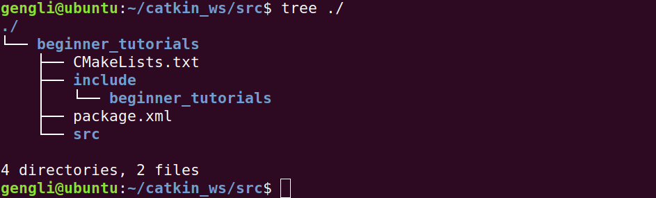

第三节 创建package
本节介绍ROS package的创建，参加此处。
1. 什么是package
package就是一个模块，就像Python、Java等有各种包。知道这个意思就行。
一个package至少有两个文件，CMakeList.txt和package.xml。这两个文件是一个package必须的，里面描述了该package编译的方式和所包含的文件等信息。
文件结构如下：
- my_package/
- CMakeLists.txt
- package
此外还可以多个包汇合在一个工作空间（workspace），此时文件结构如下：
workspace_folder/
src/
CMakeLists.txt
package_1/
- CMakeLists.txt
- package.xml
...
package_n/
- CMakeLists.txt
- package.xml
即用一个CMakeLists.txt文件来组织多个包。
2. 创建一个package
首先创建文件夹（说得高大上一点就是工作空间workspace），这个可以自己定。我创建在本用户目录下，使用ROS基本都用普通用户，不用root用户。在ROS中，package通常放在一个叫src的目录下：
mkdir -p ~/catkin_ws/src
cd ~/catkin_ws/src
然后创建一个叫beginner_tutorials的包，指定依赖于 std_msgs, rospy 和roscpp的package：
catkin_create_pkg beginner_tutorials std_msgs rospy roscpp --rosdistro moledic
用--rosdistro moledic是因为我们用的是 moledic 版本的ROS。catkin_create_pkg的用法是
catkin_create_pkg <package_name> [depend1] [depend2] [depend3]
此时我们的目录结构如下：

3. 构建（build）工作空间并初始化文件
cd ~/catkin_ws
catkin_make
如果你接着上一节内容，请确保是新打开的终端，或在原来终端下运行 source ~/.bashrc，确保catkin_make命令能运行。
运行完上面命令，用ls命令查看，发现多了个devel的文件夹。为了把我们这个工作空间加入到环境变量中，需要执行初始化文件，命令为
. ~/catkin_ws/devel/setup.bash
不过这在每个终端都要执行，为了让每次打开终端都自动运行，我们可以把这句命令加在 ~/.bashrc最后面。命令为：
echo "~/catkin_ws/devel/setup.bash" >> ~/.bashrc
4. package依赖
使用rospack depends1 [package_name]来查看直接依赖，用rospack depends [package_name]看所有依赖，运行：
rospack depends1 beginner_tutorials
输出如下：

5. 总结
这一节的关键内容是用catkin_create_pkg来创建一个工作空间。下一节讲解package.xml和CMakeLisdts.txt文件的构成。